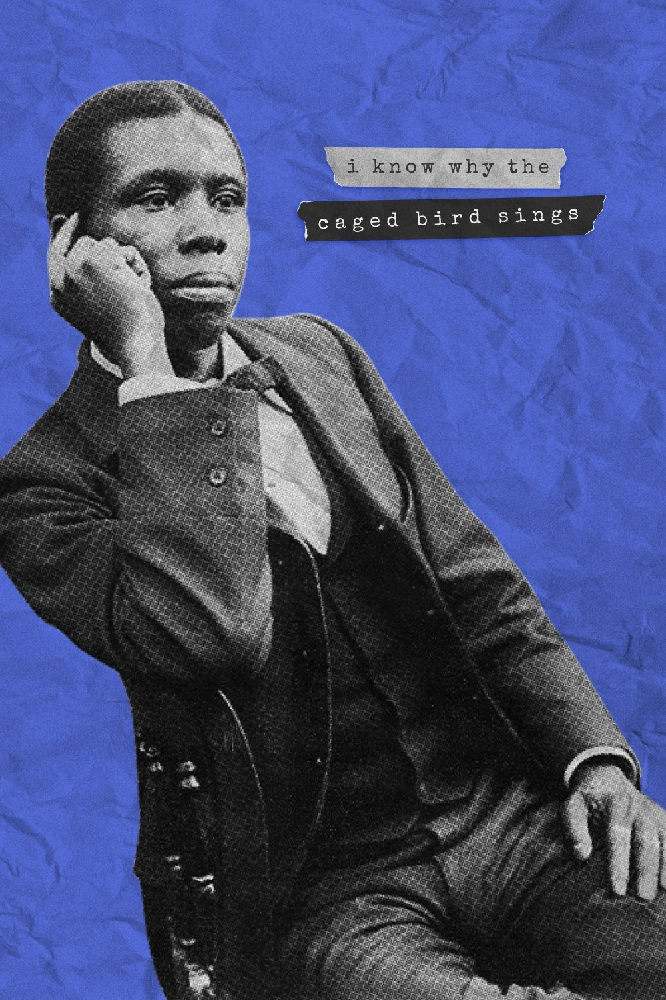

Son:
"h1" para títulos
"p" para párrafos/paragraphs
"br" salto de línea
"i" para letra cursiva
text-align: posición
know what the caged bird feels, alas!
When the sun is bright on the upland slopes;
When the wind stirs soft through the springing grass,
And the river flows like a stream of glass;
When the first bird sings and the first bud opes,
And the faint perfume from its chalice steals—
I know what the caged bird feels!
I know why the caged bird beats his wing
Till its blood is red on the cruel bars;
For he must fly back to his perch and cling
When he fain would be on the bough a-swing;
And a pain still throbs in the old, old scars
And they pulse again with a keener sting—
I know why he beats his wing!
I know why the caged bird sings, ah me,
When his wing is bruised and his bosom sore,—
When he beats his bars and he would be free;
It is not a carol of joy or glee,
But a prayer that he sends from his heart’s deep core,
But a plea, that upward to Heaven he flings—
I know why the caged bird sings!
de Paul Laurence Dunbar